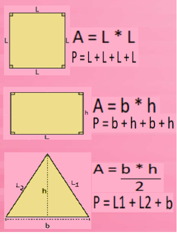
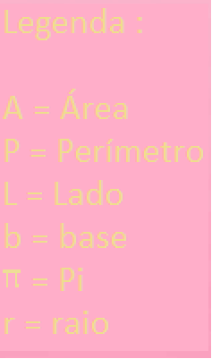
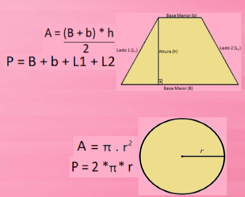

Home
Geometria Espacial
Duvidas?
Geometria Plana
A geometria Plana é a área da matemática que estuda as figuras bidimensionais, isto é, com duas dimensões.
Área e Perimetro
  
Video Simples explicando o calculo da area e perimetro de figuras planas: